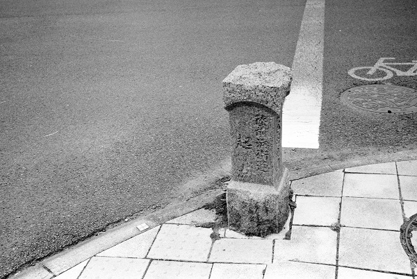

日本橋を出発して水戸市本町まで約111Km 標高差約7m 埼玉県の自宅（又は茨城の実家）から電車を乗り継ぎ日帰り 計7日間で完歩する。
| 年月日 | 出発駅・時間 | 到着駅・時間 | 歩き距離・時間 | 写真ﾌﾞﾛｸﾞ |
|---|---|---|---|---|
| 2014/9/19 | 東京駅_9：50 | 北千住駅_12：24 | 11.3Km：2時間30分 | 日光街道(同一ﾙｰﾄの為）のﾃﾞｰﾀ使用 |
| 2014/10/18 | 北千住駅_9：11 | 新松戸駅_15:42 | 25.2Km：6時間39分 | 2014/10 2014/10 |
| 2014/10/19 | 新松戸駅_9：46 | 取手駅_15:02 | 22.6Km：5時間16分 | 2014/10 |
| 2014/11/12 | 取手駅_13：17 | 藤代駅_15:16 | 9.5Km：1時間58分 | 2014/11 |
| 2014/11/13 | 藤代駅_8:37 | 土浦駅_14:57 | 26.7Km：6時間19分 | 2014/11 2014/11 |
| 2014/11/15 | 土浦駅_9:06 | 小美玉市役所バス停_15:47 | 28.3Km：6時間41分 | 2014/11 2014/11 |
| 2014/11/17 | 小美玉市役所バス停_9:05 | 水戸駅_14:38 | 23.8Km：5時間33分 | 2014/11 2014/11 完歩する |
水戸街道終点ここからは陸前浜街道、道標 陸前浜街道起点
